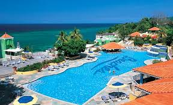
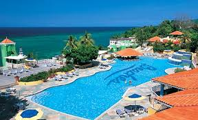
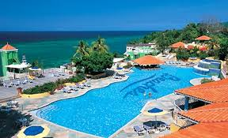
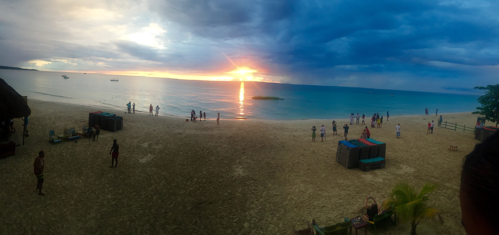
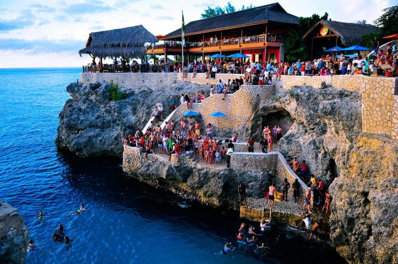
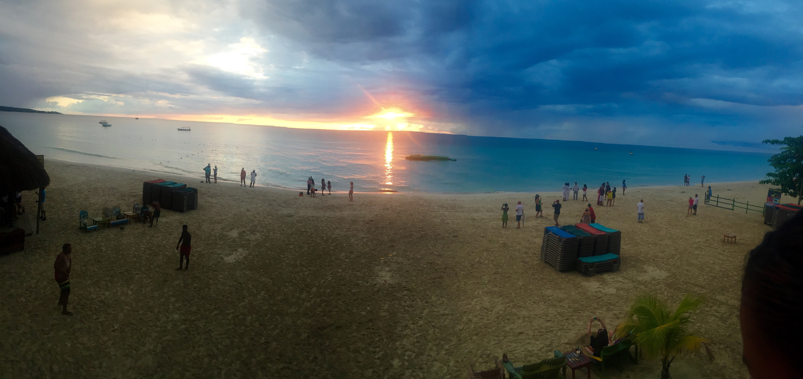
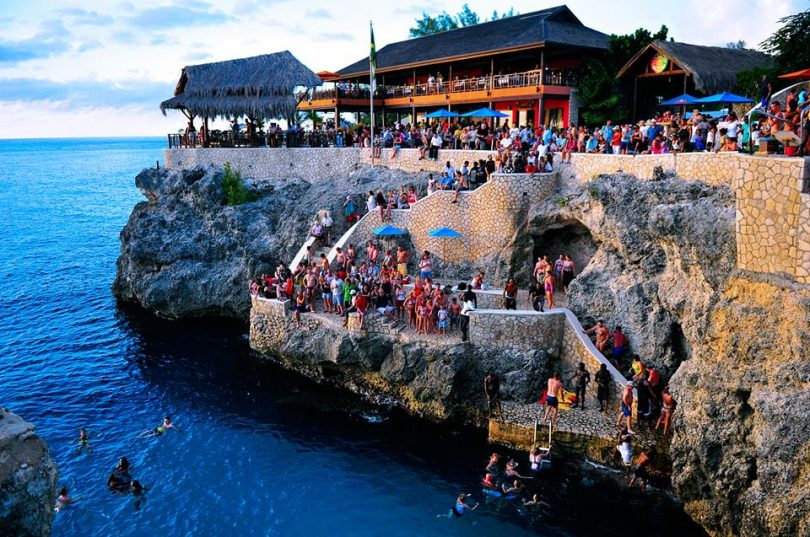

Where to Stay
 



Where to Stay
Must-Sees
 



Typical Costs
Accomodation
For the all-inclusive resort experience, expect to empty your pockets. All-inclusive packages can run you at least $600 for a few nights. If you're looking for cheaper options, a night in a hostel dorm starts around $15 USD, while a private room that sleeps two is about $45 USD. You can book your hostel with Hostelworld. A night in a 2-star budget hotel in a room that sleeps two starts around $66 USD. Included in this price are basic hotel amenities, like a private bathroom, free WiFi, air-conditioning, and television. Use Booking.com as they consistently return the cheapest rates. On Airbnb, you can rent entire homes (usually studio apartments) starting around $20 USD per night.
Food
Fish is a big staple of Jamaican food and will be served everywhere. Red beans and rice, jerk chicken or pork, sweet potato pudding, meat pies are also typical Jamaican dishes. While you’re there, make sure to try their world-renowned Blue Mountain coffee. Lunch and casual meals cost around $4.50 USD, while dinner will be about $10 USD. Expect to pay $65 USD per week for groceries if you plan on cooking. That price includes foods like pasta, vegetables, chicken, along with other basic foods.
Transportation
Buses are the best way to get around Jamaica. The trip from Kingston to Montego Bay takes 5 hours and costs $24 USD. Negril to Montego Bay is 2 hours and costs $10 USD. For transportation within a city, the buses in Jamaica are extremely inexpensive, under $1 USD per trip. Taxis, on the other hand, are expensive. Expect $18 USD for a 10-mile trip. Uber, the taxi alternative, is available in Kingston.